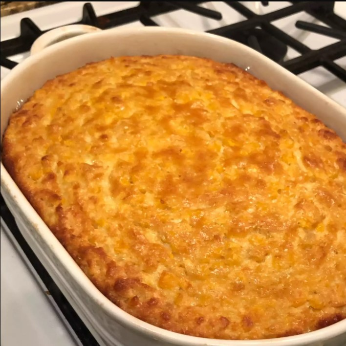

Grandma's Corn Pudding!!

How to Make Corn Pudding
You'll find the full, step-by-step recipe below — but here's a brief overview of what you can expect when you make this old-fashioned corn pudding casserole:
- Whisk the eggs, then whisk in the milk, butter, sugar, and cornstarch.
- Stir in the drained canned whole kernel corn and cream-style corn.
- Pour mixture into the prepared casserole dish and bake until golden brown.
Ingredients
- 5 large eggs
- ⅓ cup butter, melted and slightly cooled
- ¼ cup white sugar
- ½ cup milk
- ¼ cup cornstarch
- 1 (15.25 ounce) can whole kernel corn, drained
- 2 (14.75 ounce) cans cream-style corn
Direction
Step 1
Preheat the oven to 400 degrees F (200 degrees C). Grease a 2-quart casserole dish.
Step 2
Whisk eggs lightly in a large bowl. Add milk, melted butter, sugar, and cornstarch; whisk until well combined. Stir in drained corn and cream-style corn until fully blended. Pour mixture into the prepared casserole dish.
Step 3
Bake in the preheated oven until golden brown, about 1 hour.